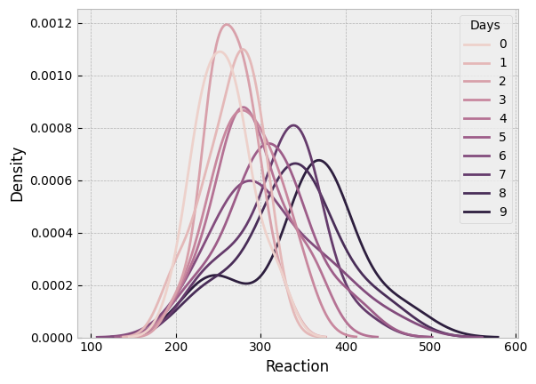
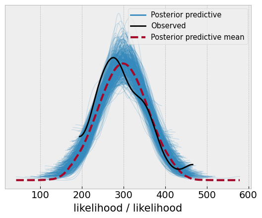
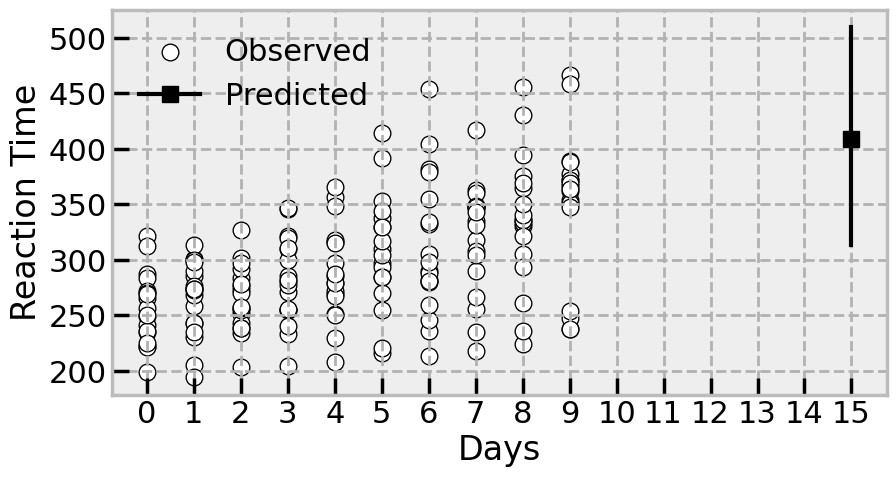
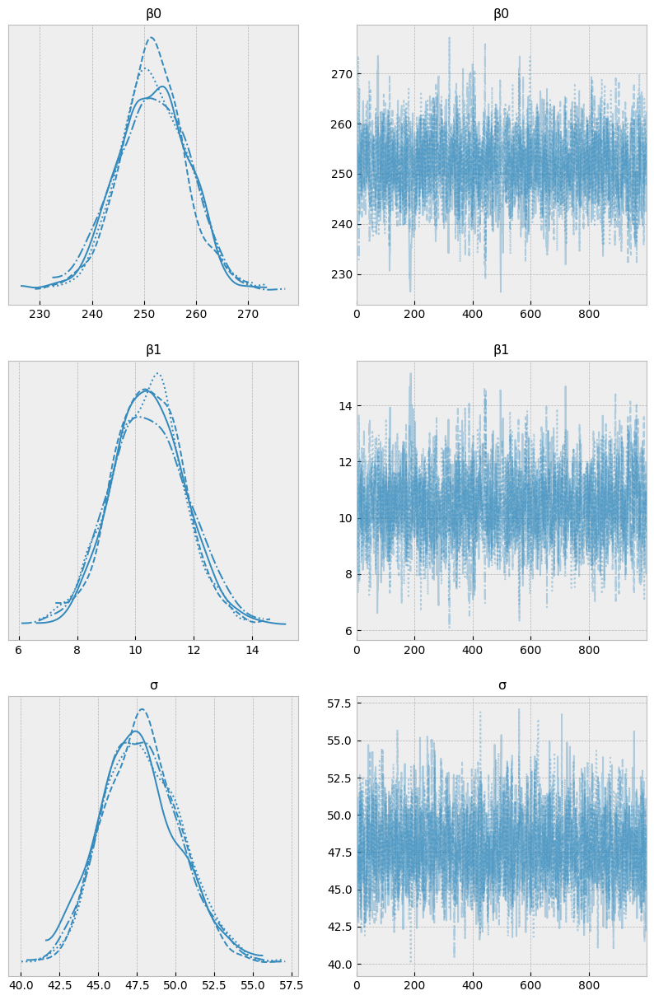
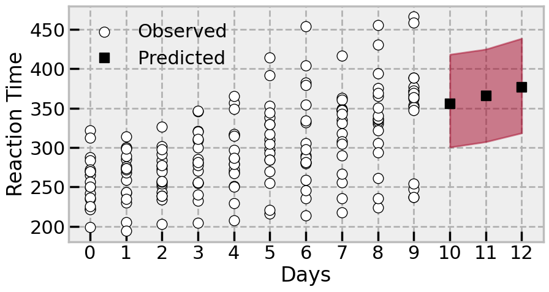
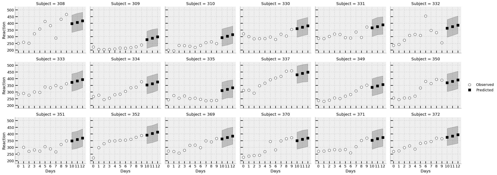
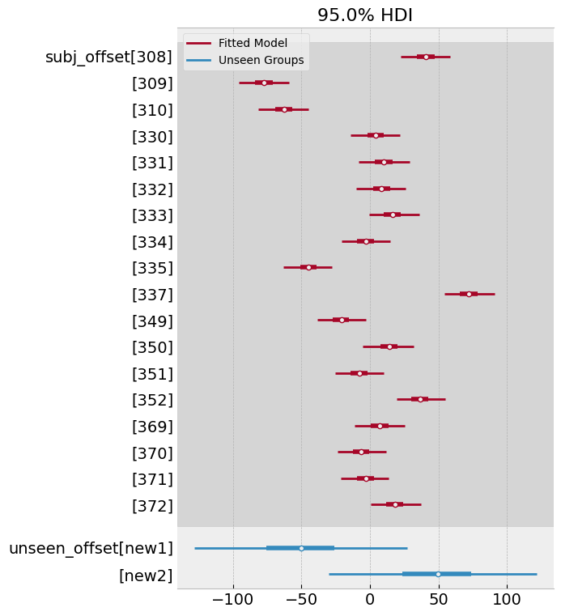
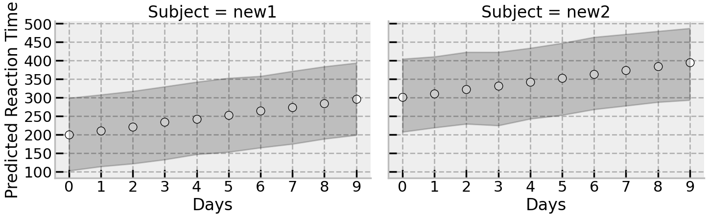
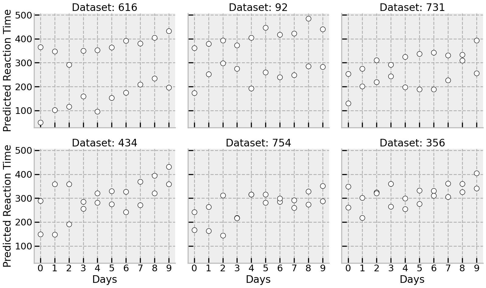

# Imports
import bambi as bmb
import pymc as pm
import pandas as pd
import numpy as np
import arviz as az
import seaborn as sns
import seaborn.objects as so
import matplotlib.pyplot as plt
from itertools import product
rng = np.random.default_rng(42)
plt.style.use('bmh')Out-of-sample predictions with PyMC: A hieararchical linear model case study
Bayesian
PyMC
predictions
How out of sample predictions work with PyMC
PyMC is an awesome probabilistic programming language that makes it easy to build Bayesian statistical models, and I’ve used it exclusively for several years for data analysis problems. Despite its flexibility, one of the few sticking points I’ve encountered is trying to generate out-of-sample predictions. In the age of machine learning and predictive modelling, simply fitting a model to data and assessing the quality of predictions is no longer the gold standard - rather, our models should be able to predict data that they have never seen before. Python libraries like scikit-learn place the predictive utility of models front and centre, but it is not so straightforward to do this in PyMC. This is a shame, because Bayesian models come with free uncertainty around predictions - an incredibly powerful feature when uncertainty is so important to quantify, and yet point estimates or confusing frequentist confidence intervals are the main currency of prediction.
This problem is especially compounded with hierarchial models, because they several kinds of choices when doing out-of-sample predictions! For example: - A hierarchical model could predict new, unobserved data for an “average” person, omitting the group-specific effects entirely - this is common in many packages as the default, such as in lme4 in R. - A hierarchical model could predict on new, unobserved data for a known group-specific (or random effect) value. An example would be using the model to predict new scores on an unobserved quantity for an individual already in the dataset. - A hierarchical model might predict unobserved data for an unknown group-specific effect. An example of this would be predicting scores for unseen, new groups.
Doing this in PyMC is possible, but not immediately obvious. Here, I’ll try some examples of out of sample predictions using PyMC. Much of this was inspired by the excellent webinar on out of sample predictions by Ricardo Vieira and Alex Andorra, on the Learning Bayesian Statistics podcast. Its also worth noting that the excellent bambi package abstracts much of this away and makes prediction very easy, but there are still many occasions when I need to write a model myself that bambi doesn’t yet support or I need more specific control and detail.
Let’s go!
As a working example, I’ll use the sleepstudy dataset that comes with bambi. This simple dataset is hiearchical in nature, showing reaction times on a task for people who had participated in a sleep deprivation study. Participants are measured over several days, providing reaction times once a day. Thus, the reaction times are nested within the participants, making for an ideal case of hiearchical modelling.
# Load sleep
sleep = bmb.load_data(dataset='sleepstudy')
display(sleep.head())
# Visualise the reaction times for each day
sns.kdeplot(data=sleep, x='Reaction', hue='Days');| Reaction | Days | Subject | |
|---|---|---|---|
| 0 | 249.5600 | 0 | 308 |
| 1 | 258.7047 | 1 | 308 |
| 2 | 250.8006 | 2 | 308 |
| 3 | 321.4398 | 3 | 308 |
| 4 | 356.8519 | 4 | 308 |

Reaction time gets a bit noisier and slower, as the length of deprivation increases, as we’d expect!
Out of sample predictions, approach one - pm.MutableData
In situations outside of the hierarchical model, PyMC has a data container class that allows for simple switching out of predictor and observed datasets inside a model. The model is first estimated to get the posterior, and then the data is swapped out for new observations, and a posterior-predictive sample can be drawn.
Below, a non-hiearchical (or ‘no pooling’) model is fitted to the data. This obviously ignores the nesting withing participants, so is done only to illustrate how easy pm.MutableData makes swapping out predictions. First, let us build a simple linear regression, predicitng reaction time from the observed number of days, and setting the Days variable as a mutable object, as well as setting the dependent variable Reaction as one, too. The priors will be roughly informative given the scale of the data we see in the above plot.
# Build the model
with pm.Model() as no_pool:
# Set Days as mutable data
X = pm.MutableData('X', sleep['Days'].to_numpy())
y = pm.MutableData('y', sleep['Reaction'].to_numpy())
# Prior for intercept, roughly informative
β0 = pm.Normal('β0', mu=0, sigma=300)
# Prior for slope of Days, also roughly informative
β1 = pm.Normal('β1', mu=0, sigma=20)
# Noise variability
σ = pm.HalfCauchy('σ', beta=10)
# Linear predictor
μ = β0 + X*β1
# Likelihood is normal
pm.Normal('likelihood', mu=μ, sigma=σ, observed=y)
# Sample
idata = pm.sample()Auto-assigning NUTS sampler...
Initializing NUTS using jitter+adapt_diag...
Multiprocess sampling (4 chains in 4 jobs)
NUTS: [β0, β1, σ]100.00% [8000/8000 00:11<00:00 Sampling 4 chains, 0 divergences]
Sampling 4 chains for 1_000 tune and 1_000 draw iterations (4_000 + 4_000 draws total) took 31 seconds.With the posterior in hand, we can examine distributions of the parameters if we want to. We can also sample the posterior-predictive distribution, which will inform us of the distribution of the likely future values, integrating over the uncertainty in the parameters of the model. To be very strict with definitions, this is more of a retrodiction than a prediction, because the model will generate likely values for the data about which it has seen. Lets generate the posterior predictive (for the in-sample data), and see how it compares to the original data.
# Sample the posterior predictive
with no_pool:
idata.extend(pm.sample_posterior_predictive(idata))
# Visualise
az.plot_ppc(idata, num_pp_samples=500);Sampling: [likelihood]100.00% [4000/4000 00:00<00:00]

This looks reasonable, but the predictions could be better, but we will move on!
Now lets imagine a scenario where some unpleasant experimenter wants to know what happens if we were to deprive people of sleep for 15 days - what would the reaction time look like for that? We can simply add in a new datapoint (remember our model is entirely blind to different participants) using pm.set_data, for our X mutable data, and resample the posterior predictive distribution. We will also need to add a “placeholder” value for y. In many cases you may genuine observations for Y that you are predicting, but we don’t here, so we simply add a new variable as a stopgap.
# Generate a prediction for reaction time for 20 days of deprivation
with no_pool:
# Set the data, and add in a new coordinate for it
pm.set_data({'X': np.array([15]),
'y': np.array([-99])
})
# Sample posterior predictive, and set predictions = True
idata.extend(pm.sample_posterior_predictive(idata, predictions=True))Sampling: [likelihood]100.00% [4000/4000 00:00<00:00]
Lets see what happens by extracting the data point, and comparing it to the observed data
# Plot the data
with sns.plotting_context('poster'):
# Canvas
fig, ax = plt.subplots(1, 1, figsize=(10, 5))
# Scatter the observed data
sns.scatterplot(data=sleep, x='Days', y='Reaction', ax=ax, color='white', edgecolor='black', label='Observed')
# Add in the predicted datapoints mean by aggregating it across chains and draws
ax.plot(15, idata['predictions']['likelihood'].mean(('chain', 'draw')), color='black', marker='s', label='Predicted')
# Compute the HDI
hdi = az.hdi(idata['predictions']['likelihood'],
hdi_prob=.95).to_array().to_numpy()
# Plot it
ax.plot([15, 15], hdi.flatten(), color='black')
# Clean up axis
ax.set(ylabel='Reaction Time',
xticks=range(0, 16))
# Turn on legend()
ax.legend(frameon=False)
The model implies, with some uncertainty, that the reaction time will be pretty slow after 20 days in the study. Certainly it will be in the range of some of the highest observed reaction times in the study.
Fitting the hierarchical model
We can now turn to predictions with a hierarchical model. For the purposes of the sleepstudy data, this involves a group-specific effect for each participant who provides multiple ratings. This is achievable by taking advantages of the labelled coordinates PyMC accepts, and indexing the prior for each participant using fancy-indexing like any normal NumPy array. First we build the model, using the .factorize() method of a pd.Series object to obtain the indexes and labels for each participant.
# Get index locations and labels
subj_ind, subj_label = sleep['Subject'].factorize()
print(subj_ind)
print(subj_label)[ 0 0 0 0 0 0 0 0 0 0 1 1 1 1 1 1 1 1 1 1 2 2 2 2
2 2 2 2 2 2 3 3 3 3 3 3 3 3 3 3 4 4 4 4 4 4 4 4
4 4 5 5 5 5 5 5 5 5 5 5 6 6 6 6 6 6 6 6 6 6 7 7
7 7 7 7 7 7 7 7 8 8 8 8 8 8 8 8 8 8 9 9 9 9 9 9
9 9 9 9 10 10 10 10 10 10 10 10 10 10 11 11 11 11 11 11 11 11 11 11
12 12 12 12 12 12 12 12 12 12 13 13 13 13 13 13 13 13 13 13 14 14 14 14
14 14 14 14 14 14 15 15 15 15 15 15 15 15 15 15 16 16 16 16 16 16 16 16
16 16 17 17 17 17 17 17 17 17 17 17]
Index([308, 309, 310, 330, 331, 332, 333, 334, 335, 337, 349, 350, 351, 352,
369, 370, 371, 372],
dtype='int64')The first variable keeps track of where responses belong to which group (i.e., participant), and the second is the label. We use the first to index the prior in the model, and the second to give the prior instantiation the number of individual priors, as PyMC supports multidimensional priors:
# First set up the coords, passed as a dictionary
c = {'subject': subj_label} # PyMC infers number of labels
with pm.Model(coords=c) as hierarchical:
# Add in X and y (though this is not strictly needed
X = pm.MutableData('X', sleep['Days'].to_numpy())
y = pm.MutableData('y', sleep['Reaction'].to_numpy())
# Hyperprior for the variability of the subjects
subj_σ = pm.HalfCauchy('subj_σ', beta=50)
subj_offset = pm.ZeroSumNormal('subj_offset', sigma=subj_σ, dims='subject') # Zero sum simplifies hiearchical modelling, and dims infers number of individual priors
# Roughly informative coefficients prior
β0 = pm.Normal('β0', mu=0, sigma=300)
β1 = pm.Normal('β1', mu=0, sigma=20)
# Noise variability
σ = pm.HalfCauchy('σ', beta=50)
# Linear predictor now includes indexing of the offset with `subj_ind`
μ = β0 + subj_offset[subj_ind] + X*β1
# Likelihood is normal
pm.Normal('likelihood', mu=μ, sigma=σ, observed=y)
# Sample
hierarchical_idata = pm.sample()Auto-assigning NUTS sampler...
Initializing NUTS using jitter+adapt_diag...
Multiprocess sampling (4 chains in 4 jobs)
NUTS: [subj_σ, subj_offset, β0, β1, σ]100.00% [8000/8000 00:18<00:00 Sampling 4 chains, 0 divergences]
Sampling 4 chains for 1_000 tune and 1_000 draw iterations (4_000 + 4_000 draws total) took 35 seconds.# Examine the trace, as we'll be using this model a lot
az.plot_trace(idata, figsize=(10, 15));
Out of sample predictions
Type 1 - predicting for an “average” person, or omitting the group-specific terms
With a fitted hierarchical model, we can start trying to make predictions. The first kind of prediction we’ll examine is the most common - predicting with only the common, or “fixed” effects. In the case of this model, that would be relying on the intercept and slope terms (β0 and β1 respectively) to take in a new predictor value and output a prediction, with no reference to the group specific effects.
If we try the method above - setting new data for X and y - we will immediately encounter an error. The model will take in the new data and try to pass it through the linear predictor formula, which includes the group-specific indexing of subj_offset, and it won’t work.
The solution, which is not immediately obvious, is to build another model with an identical structure, add in a new variable we would like to sample, and have the model sample the posterior predictive distribution of it. Lets say we want to predict, for the average person, the effects of 10, 11, and 12 days of taking part in the study, but we want to omit the group specific effect entirely. There will likely be little difference in this toy example out of sample predictions in this fashion and the no-pooled model, but more complex hieararchical models would definitely show a different pattern.
# First, set the new data we want to predict
newX = np.array([10, 11, 12])
# Build a new model that is the same as the original in its structure, but omits the group-specific effect from the linear predictor
with pm.Model(coords=c) as no_group_specific:
# Prior for scale of random effects then the random effect itself - as earlier. We could even delete these lines
ppt_sigma = pm.HalfCauchy('ppt_sigma', beta=50)
ppt_ranef = pm.ZeroSumNormal('ppt_ranef', sigma=ppt_sigma, dims='subject')
# Prior for the model coefficients - as earlier
β0 = pm.Normal('β0', mu=0, sigma=300)
β1 = pm.Normal('β1', mu=0, sigma=20)
σ = pm.HalfCauchy('σ', beta=50)
# Take the linear combination with NO group-specific and using the newX
μ = β0 + newX*β1So far, the model is a repeat of the initial model, even including group specific effects that aren’t used. We now add in a new term and sample the posterior predictive distribution of it, by passing the InferenceData of the initial model. Surprisingly - and this is the non-obvious part - the new model will use the posterior contained in the inference data for all the values in the model, aside from the new one which will be sampled. The group specific effects could be deleted from the code if we wanted to; they will be ignored.
with no_group_specific:
# This is the new variable we want to sample
no_group_estimate = pm.Normal('no_group_estimate', mu=μ, sigma=σ)
# First set of out of sample predictions
predictions1 = pm.sample_posterior_predictive(hierarchical_idata, var_names=['no_group_estimate'], predictions=True)Sampling: [no_group_estimate]100.00% [4000/4000 00:00<00:00]
Lets take a look at these predictions, generated without any recourse to individual groups:
# Plot the data
with sns.plotting_context('poster'):
# Canvas
fig, ax = plt.subplots(1, 1, figsize=(10, 5))
# Scatter the observed data
sns.scatterplot(data=sleep, x='Days', y='Reaction', ax=ax, color='white', edgecolor='black', label='Observed')
# Add in the predicted datapoints mean by aggregating it across chains and draws
ax.plot(newX, predictions1['predictions']['no_group_estimate'].mean(('chain', 'draw')), color='black',
marker='s', linestyle='None', label='Predicted')
# Nicely shade the area that the points might fall in
az.plot_hdi(newX, y=predictions1['predictions']['no_group_estimate'])
# Clean up axis
ax.set(ylabel='Reaction Time',
xticks=range(0, 13),
axisbelow=True)
# Turn on legend()
ax.legend(frameon=False)
Type 2 - predicting new scores for specific, observed groups
One benefit of hierarchical models is that they capture differences in specific groups; in social science or psychology research, this is typically leveraged to study individual differences. Here, we could use the model to predict scores for days 10, 11, and 12, for all individuals, accounting for their variability in baseline reaction times. This can be achieved with a creation of a new dataframe that ties the new values to be predicted to the existing group labels, and using the .factorize() approach to reindex the priors. Let’s now predict for days 10, 11, and 12, but this time including all group specific effects.
# Build a new DataFrame, tying the days to predict to each unique subject ID
# use of product to cleanly create the long-format dataframe
newDF = pd.DataFrame([(subject, day) for subject, day in product(sleep['Subject'].unique(), newX)],
columns=['Subject', 'Days'])
newInd, _ = newDF['Subject'].factorize() # Get the new indexes of the subject locations in newDF
with pm.Model(coords=c) as include_group_specific:
# Hyperprior for the variability of the subjects - like before
subj_σ = pm.HalfCauchy('subj_σ', beta=50)
subj_offset = pm.ZeroSumNormal('subj_offset', sigma=subj_σ, dims='subject')
# Roughly informative coefficients prior - like before
β0 = pm.Normal('β0', mu=0, sigma=300)
β1 = pm.Normal('β1', mu=0, sigma=20)
# Noise variability - like before
σ = pm.HalfCauchy('σ', beta=50)
# Linear predictor is identical but uses the new data and indexes the offset with newInd
μ = β0 + subj_offset[newInd] + newDF['Days'].values*β1
# And we want to sample this unobserved variable
group_predictions = pm.Normal('group_predictions', mu=μ, sigma=σ)
# Sample and provide the inference data
predictions2 = pm.sample_posterior_predictive(hierarchical_idata, var_names=['group_predictions'], predictions=True)Sampling: [group_predictions]100.00% [4000/4000 00:00<00:00]
Let’s examine how the predictions work across each participant. First we will precompute the mean and HDI of each prediction:
# Add these back to the original dataframe
mu = predictions2['predictions']['group_predictions'].mean(('chain', 'draw'))
hd = az.hdi(predictions2, hdi_prob=.95, group='predictions', var_names='group_predictions').to_dataframe().unstack('hdi').droplevel(0, axis='columns')
# Add them in
newDF = newDF.assign(mu=mu.values, **hd)
# Custom function to plot predictions and original data, per subject
def custom_plot(**kwargs):
# get data, axis
data = kwargs.pop('data')
ax = plt.gca()
# Plot the original data
sns.scatterplot(data=data, x='Days', y='Reaction', color='white', edgecolor='black', label='Observed', ax=ax, zorder=1)
# Subset newDF and plot it plus bands
thisSubj = newDF.loc[newDF['Subject'] == data["Subject"].unique()[0]]
# Plot the predictions
ax.plot('Days', 'mu', data=thisSubj, marker='s', color='black', linestyle='None', label='Predicted')
ax.fill_between('Days', 'lower', 'higher', color='black', alpha=.2, data=thisSubj)
# Tidy
ax.set(xticks=range(13), axisbelow=True)
ax.grid(alpha=.3)
with sns.plotting_context('talk', font_scale=0.8):
(
sns.FacetGrid(data=sleep, col='Subject', col_wrap=6, aspect=1.3)
.map_dataframe(custom_plot)
.add_legend()
)
The model makes predictions for unseen days for each of the participants in the study, and the uncertainty is naturally handled by the posterior distribution.
Type 3 - Predicting scores for unobserved groups
Finally, one useful property of hierarchical Bayesian models is that they can comfortably generate predictions for unseen group-level data. Once we learn the variability of the group-level effects, then new groups can be thought of as draws from this population, fed to the model, and predictions made accordingly. This sort of prediction isn’t widely seen in psychology (whereas Type 1 is), but really highlights the kind of uncertainty we’d expect to see in new data, accounting for individual variability. We can do this in PyMC below, following a similar approach as above. We can instantiate a new prior for the offsets, sample from it, and pass it to the model.
However, its generally a good idea to inject some prior knowledge into the unseen data. Given the model set up, drawing new groups will tend to collapse to zero (reducing the model to a noisier version of the no-group-specific effect prediction). Instead, if we pass some expected group-specific values, we can recover some predictions. An example here would be knowing a-priori that one of two new participants tend to have quite fast reaction times (a negative offset - faster than the average) and the other quite slow (a positive offset). This is easy to model in PyMC, and follows the standard approach of adding in new variables to sample.
First, lets make a new DataFrame containing the variables to predict - we’ll ask for each of the “Days” to be predicting for imaginary new participants, and then pass it onto the model.
# New content
days = np.arange(10)
ids = ['new1', 'new2']
# Data
unseen = pd.DataFrame(
[(subject, day) for subject, day in product(ids, days)],
columns=['Subject', 'Days'])
# Creates the new indexers
unseen_ind, unseen_sub = unseen['Subject'].factorize()
# Build a new model, and this time set new coordinates to ease dims
with pm.Model(coords={'new_subject': unseen_sub}) as unseen_group:
# Model takes the hyperprior that has been learned
subj_σ = pm.HalfCauchy('subj_σ', beta=50)
# But we add in a new unseen-offset variable, which injects corresponding prior knowledge that
# One participant is fast, and another is slow
unseen_offset = pm.Normal('unseen_offset', mu=[-50, 50], sigma=subj_σ, dims='new_subject')
# Same coefficients as before
β0 = pm.Normal('β0', mu=0, sigma=300)
β1 = pm.Normal('β1', mu=0, sigma=20)
# Noise variability - like before
σ = pm.HalfCauchy('σ', beta=50)
# Linear predictor is again identical, relying on the new indexer to the group specific
μ = β0 + unseen_offset[unseen_ind] + unseen['Days'].values*β1
# And we want to sample this unobserved variable
unseen_group_prediction = pm.Normal('unseen_group_prediction', mu=μ, sigma=σ)
# Sample and provide the inference data, taking draws for both the predictions and the offsets
predictions3 = pm.sample_posterior_predictive(hierarchical_idata, var_names=['unseen_group_prediction', 'unseen_offset'], predictions=True)Sampling: [unseen_group_prediction, unseen_offset]100.00% [4000/4000 00:00<00:00]
From this model, we can examine the variability of the offsets themselves, as well as the predictions. Lets first examine the offsets, which show that they centre roughly around the means we specified with corresponding high variability (there is no real data to update them, after all):
# Comparison of original model and new draws
az.plot_forest([predictions3['predictions'], hierarchical_idata],
combined=True, hdi_prob=.95,
model_names=['Unseen Groups', 'Fitted Model'],
var_names=['subj_offset', 'unseen_offset']);
Finally, we can examine the predictions for the unseen participants. Lets recover their predictions from the posterior and plot them as above.
# Estimate mean and HDI
unseen_mu = predictions3['predictions']['unseen_group_prediction'].mean(('chain', 'draw')).values
unseen_hd = az.hdi(predictions3, var_names='unseen_group_prediction', group='predictions', hdi_prob=.95).to_dataframe().unstack('hdi').droplevel(0, axis='columns')
# Add these to the created DataFrame
unseen = unseen.assign(mu=unseen_mu, **unseen_hd)
# Another facet grid plot
with sns.plotting_context('poster'):
(
sns.FacetGrid(data=unseen, col='Subject', height=5, aspect=1.5)
.map_dataframe(sns.scatterplot, x='Days', y='mu', color='white', edgecolor='black')
.map(plt.fill_between, 'Days', 'lower', 'higher', color='black', alpha=.2)
.set(xticks=range(10), ylabel='Predicted Reaction Time', axisbelow=True)
)
There is a huge range of different plausible datasets generated by the model, implying the steady increase (slowing) in reaction time estimated from the original data. The summary is shown here, but equally a few draws from the posterior could have been shown here for the two new participants:
# Shift the posterior into a dataframe and tack on the unseen data
psd = (predictions3['predictions']['unseen_group_prediction']
.to_dataframe()
.unstack(('chain', 'draw'))
.droplevel([0, 1], axis='columns')
.sample(n=6, axis='columns', random_state=rng)
.add_prefix('Dataset: ')
.pipe(lambda x: pd.concat((x, unseen[['Subject', 'Days']]), axis='columns'))
.melt(id_vars=['Subject', 'Days'],
var_name='simulated', value_name='Reaction')
)
with sns.plotting_context('poster'):
(
sns.FacetGrid(data=psd, col='simulated', col_wrap=3, height=5, aspect=1.1)
.map_dataframe(sns.scatterplot, x='Days', y='Reaction', edgecolor='black', color='white')
.set(xticks=range(10), ylabel='Predicted Reaction Time', axisbelow=True)
.set_titles('{col_name}')
)
Finally, its worth reiterating the huge flexibility of PyMC. Using the “re-model” approach to generating predictions, other assumptions can be played with depending on the situation - for example, its possible to swap out the pm.Normal assumption for the observed values, and insert a Student’s T distribution. Or we could perhaps fix the variance of some of the distributions if we want to restrict our assumptions about future data more tightly. The flexibility in analysis is one of the truly great things about Bayesian inference and PyMC!
%load_ext watermark
%watermark --iversionsseaborn : 0.12.2
arviz : 0.15.1
pandas : 2.0.0rc0
matplotlib: 3.6.3
pymc : 5.5.0
bambi : 0.10.0
numpy : 1.24.2